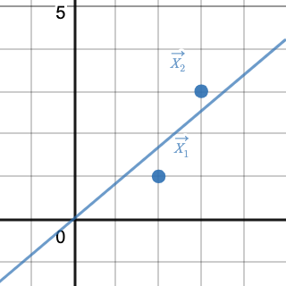

Ordinary Least Squares is Orthogonal Projection
This post visualizes the equivalence of two perspectives on estimating the unknown parameters in a simple linear regression model, ordinary least squares (OLS) and orthogonal projection (OP).
Context
In order to get more out of this post, you may want to brush up on:
- Wikipedias on ordinary least squares, vector projection, $L^2$ norm, and mean squared error.
- Vladimir Mikulik’s post on “Why Linear Regression is a projection”.
- Andrew Chamberlain’s post on “The Linear Algebra View of Least-Squares Regression”.
OLS & OP
The Big Picture
Fig 1. is a compact and interactive visualization that superimposes the two perspectives modeling a toy dataset. The remainder of this post examines each perspective in greater detail.
Fig. 1
Toy Dataset
For ease of intuition, our toy dataset is kept simple and low-dimensional; just two data points $\in \mathbb{R}^2$.
As column vectors:
\[\vec{X_1} = \begin{bmatrix}2 \\ 1\end{bmatrix} \quad \textrm{and} \quad \vec{X_2} = \begin{bmatrix}3 \\ 3\end{bmatrix} \tag{1} \label{1}\]As a matrix:
\[\mathbf{X} = \begin{bmatrix}2 & 3 \\ 1 & 3\end{bmatrix} \tag{2} \label{2}\]Fig. 2
Fig 2. shows how the vector representations (\ref{1}) translate to the cartesian plane as the first dimension represents the canonical $x$-axis while the second dimension represents the canonical $y$-axis.
OLS Perspective
In the context of machine learning, it is common to view OLS linear regression as a supervised learning problem. Here’s a hand-wavy :) overview.
The model is presented inputs for which it makes corresponding predictions (outputs). An error signal is calculated by aggregating the squared difference of the model’s outputs against corresponding “true” values that have been observed or are known a priori (a.k.a. labels). Hence the term “supervised”, the error signal is used to correct (as a teacher often corrects a student) the model parameters. This training routine loops until the model parameters converge. By minimizing the error signal, the model learns optimal parameters.
\[x=2.0 \\ y=1.0 \\ \hat{y} = f(x;\beta) = 1.2 \\ err(y, \hat{y}) = (1.0 - 1.2)^2 \tag{3} \label{3}\]\ref{3} shows a hypothetical example of a single instance error calculation, $err$, for some model input, $x$, some model prediction (output), $\hat{y}$; a linear function of $x$ parameterized by $\beta$, and some label, $y$.
On top of our already simplified dataset, we’ll also simplify model complexity by omitting the bias/intercept term, i.e., restricting our model to only one learnable parameter. Let’s train the model.
Fig. 3
import numpy as np
from sklearn.linear_model import LinearRegression
X = np.array([[2], [3]])
y = np.array([[1], [3]])
reg = LinearRegression(fit_intercept=False).fit(X, y)
print('weights/parameters', reg.coef_)
weights/parameters array([[0.84615385]])
Fig 3. prints the resulting parameters (just one in our case) of an OLS LinearRegression implementation written in Python using a popular machine-learning Python package (scikit-learn) after being fit to (learning) our toy dataset.
Fig. 4

Fig 4. shows the OLS linear regression model fit to our toy dataset. The hyperplane (line of best fit) has a slope of $0.84615385$ as expected per output of Fig 3. If we didn’t omit the bias/intercept term and we let the model learn another degree of freedom (another parameter), the solution would yield a hyperplane that fits the data perfectly, i.e., the hyperplane would be free to adjust itself to interpolate (intersect) exactly both data points. See polynomial interpolation for proof of uniqueness.
How does all of that translate to OP? Let’s take a look.
OP Perspective
Here’s another hand-wavy :) overview.
The learning process under the lens of OP reduces to solving a system of linear equations; so we’ll need to frame our toy dataset as such by vectorizing the linear model, e.g., the model’s outputs will be a linear function of the inputs and the learned parameters. We can represent our model inputs and labels as vectors $\in \mathbb{R}^2$.
\[\vec{Y_1} = \begin{bmatrix}2 \\ 3\end{bmatrix} \quad \textrm{and} \quad \vec{Y_2} = \begin{bmatrix}1 \\ 3\end{bmatrix} \tag{4} \label{4}\]To disambiguate \ref{1} from \ref{4}, note that $\vec{Y_1}$ consists of the first dimensions of $\vec{X_1}$ and $\vec{X_2}$ while $\vec{Y_2}$ consists of the second dimensions of $\vec{X_1}$ and $\vec{X_2}$. In other words, $\vec{Y_1}$ is a vector of our model inputs and $\vec{Y_2}$ is a vector of our model labels.
Fig. 5
Fig 5. shows how \ref{1} and \ref{4}, together, translate to the cartesian plane.
The equation we need to solve to model our data is:
\[\vec{Y_1}\vec{\beta} \approx \vec{Y_2} \tag{5} \label{5}\]It’s best practice to validate the shapes of the matrices/vectors when operating on them. $\vec{Y_1}$ is $2 \times 1$, $\vec{\beta}$ is $1 \times 1$, (recall that we’re omitting the bias/intercept term), and so $\vec{Y_2}$ checks out to be $2 \times 1$.
Intuitively, \ref{5} tells us that $\vec{Y_2}$ is approximately equal to a scaled version of $\vec{Y_1}$ and that scaling factor is our learned parameter in $\vec{\beta}$. The approximation is important because $\vec{Y_1}\vec{\beta} = \vec{Y_2}$ will only be true if $\vec{Y_2}$ can be exactly expressed as a scaled version of $\vec{Y_1}$. In practice this is seldom true. In our example, it certainly isn’t (see Fig 6.).
Fig. 6
Fig 6. shows a subset of scaled versions of $\vec{Y_1}$ with the dashed green line and one randomly chosen realization with the orange mark. That line actually extends to infinity in both directions making up a vector subspace. Notice how $\vec{Y_2}$ does not fall within that subspace? This is why we need to approximate a solution to the system and why we used the $\approx$ symbol in \ref{5}.
It turns out that the best approximation we can get is the OP of $\vec{Y_2}$ onto $\vec{Y_1}$’s subspace. Omitting mathematical proofs, let’s visualize that claim. We can define the distance from $\vec{Y_2}$ to $\vec{Y_1}$’s subspace as a function of some scalar, $\beta$, which computes the distance from $\vec{Y_2}$ to a scaled version of $\vec{Y_1}$.
\[\delta(\beta) = euclidean\_distance(\vec{Y_2}, \beta \cdot \vec{Y_1}) \tag{6} \label{6}\]Fig. 7
Fig 7. shows the distance function, $\delta(\beta)$, and corresponding input-output tuple, ($\beta, \delta(\beta)$), in red; of some difference-vector, in dotted orange. The difference-vector is the vector between $\vec{Y_2}$ and some vector (varied, indicated by the orange dotted line and mark) falling within $\vec{Y_1}$’s subspace. Notice that the distance function is minimized when the difference-vector is orthogonal to $\vec{Y_1}$’s subspace. The value of $\beta$, at the minimum is $0.84615385$, exactly the same solution observed in Fig 3. and Fig 4. with OLS.
The term “regression” has a concrete definition in the field of statistics but what does it mean to “regress” one variable “onto/against” another? My answer is OP. In this example we “regressed” our dependent variable, encoded as $\vec{Y_2}$, “onto/against” our explanatory variable, encoded as $\vec{Y_1}$.
In hindsight, this duality may not come as such a surprise after all. If we consider the objective function from each perspective, they both seek to minimize a similar, if not the same, thing. The only difference is how the problem is framed. I’ll leave it up to you as the reader to make the comparison between mean squared error and the $L^2$ norm of the difference-vector, i.e., $||\vec{Y_1} - \beta \cdot \vec{Y_2}||_2$. The differences come from applying normalizing constants and/or monotonic transformations, both of which have no effect on minimization.
Stitching all of that together, we can circle back to Fig 1. and watch the two perspectives “move” together. Hopefully now, it is easier to interpret and makes for an elegant visualization.
Desmos
I built the visualizations for this post with Desmos, an incredible graphing web application that enables users to visualize, study, and learn mathematics.